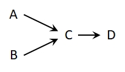
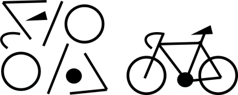

La forma de pensar
influye en cómo resolvemos los problemas. Aquí se propone
una forma particular de buscar respuestas a cuestiones relacionados
a predios rurales.
Las actividades
productivas en predios rurales pueden impactar en el mediano a
largo plazo por la acumulación de efectos negativos sobre la
vegetación, el suelo o el agua. Por ejemplo, el incremento de
la carga animal generan el consumo de la vegetación, lo que
afecta el crecimiento, forma y/o distribución de las especies
vegetales presentes. Las consecuencias de estos impactos se
observan con el transcurso del tiempo, y a veces amplificados
más allá de lo previsible.
A menudo, las
iniciativas para mejorar la economía y la producción
predial no alcanzan los objetivos deseados, o su abordaje es muy
complejo. A veces los buenos resultados duran poco. ¿Por
qué sucede esto?
|
Cuando los
problemas son sencillos como en el caso de la Figura 1A, donde A y
B son la causa de C, y D de la consecuencia de C, la decisión
es simple y su resultado previsible. Un tipo de razonamiento como
el del esquema 1A se conoce como pensamiento lineal.
|

Figura 1A Causalidad lineal.
|

Figura 1 B Causalidad
sistémica.
|
Sin embargo, los
problemas de manejo sustentable suelen ser mucho más
complejos, y se asemejan a la Figura 1B, donde causas y
consecuencias se confunden: la causa A produce B y B genera C pero
también afecta D, que impacta en E, y ésta en C, que a
través de D vuelve a influir en A. Entonces, en el diagrama 1B
entran en juego muchas causas que se influyen mutuamente por
más de un camino, retroalimentándose, es decir,
influyendo entre sí directa o indirectamente. El razonamiento
de la Figura 1B se conoce como pensamiento sistémico.
Aquí en contraposición le llamaremos causalidad
sistémica.
|
|
En ambos casos es
importante hacer explícitos estos análisis causales, de
manera de poder transmitirlos, ponerlos a prueba y discutirlos, que
es el primer paso a seguir a la hora de resolver problemas. Para
ejemplificar podemos citar el viejo dilema de la gallina y el
huevo, cuál fue primero. Desde el punto de vista de la
causalidad lineal el diagrama conceptual nos remite a Figura 2A o a
su inverso:
|
Figura 2A Causalidad lineal.
|
|
Figura 2B Causalidad sistémica.
|
Mientras que desde
la causalidad sistémica existe una retroalimentación
entre los factores involucrados (Figura 2B), esta forma de plantear
relaciones causales de manera circular, donde los resultados de
nuestras acciones se entrelazan a medida que transcurre el tiempo
con un retardo o delay entre causas y consecuencias, es la base del
comportamiento dinámico, en contraposición con el
pensamiento lineal estático.
|
|
Algunos ejemplos
permiten mostrar esta idea. En la Figura 2C más vientres
producen más pariciones, y con más parición, en el
futuro habrá más vientres.
|
Figura 2C: Más
vacas producen más terneros (++) y más terneros permiten
obtener más vacas.
|
|
En la Figura 2D se
muestra que una mayor cantidad de árboles que producen
semillas promoverán la regeneración, que con el tiempo
aumentarán la población de árboles. En ambos casos
la interacción refuerza a los componentes de cada
sistema.
|
Figura 2D: Más
árboles producen más retoños y éstos, con el
tiempo, se convertirán en más árboles que semillen
(++).
|
|
Pero también
ocurren situaciones donde la interacción balancea (equilibra)
el resultado, como es el caso de la Figura 2E. El aumento de la
disponibilidad forrajera permite al tiempo un incremento de la
carga, cuyo efecto mediato es la disminución del forraje,
limitando la carga. Esta causalidad circular es una
característica importante del pensamiento
sistémico.
|
Figura 2E: Mayor cantidad de vacas
reduce la disponibilidad de forraje, pero más forraje permite
más carga de ganado (+-) Se balancea
|
Figura 2E: Mayor
cantidad de vacas reduce la disponibilidad de forraje, pero
más forraje permite más carga de ganado (+-) Se
balancea.
¿Pero que es
un sistema?
Un sistema es un
conjunto de elementos interconectados y organizados para alcanzar
un objetivo. Es más que la suma de sus partes, ya que puede
adaptarse, preservarse, evolucionar, responder a eventos, perseguir
un objetivo y repararse para asegurar su supervivencia. La
integridad del sistema se manifiesta en la relación coherente
de sus partes.
Por ejemplo, una
bicicleta, compuesta por el piñón, la corona, la cadena,
las ruedas, el volante y el asiento, es más que la suma de
estas piezas. Juntas, permiten la movilidad mediante el pedaleo,
algo que las partes por sí solas no pueden
lograr.

Figura 3:
Componentes desvinculados (izquierda) y bicicleta con sus elementos
organizados (derecha).
En el diagrama de
la figura 4, el rodeo, representado por los vientres aprovecha
forraje del pastizal y del bosque (representado por las
plántulas de regeneración y los árboles). Si el
forraje es abundante se incrementarán las pariciones, y con
ello la cantidad de vientres y otros animales del rodeo,
aumentando la carga ganadera. Por otra parte, la cosecha de
árboles y la venta de animales aumentan los ingresos
económicos. Además, la corta de árboles
incrementará la intensidad de luz que llega al suelo,
mejorando la oferta forrajera predial.
Sin embargo, el
pastoreo también afecta la capacidad de regeneración del
bosque, por ramoneo de frutos de los árboles, o por el consumo
o pisoteo de las plántulas establecidas. Estos efectos pueden
no ser evidentes en el corto plazo, y en la medida que no se
destinen ingresos económicos a proteger las plántulas o a
reforestar, cabe esperar una futura disminución de la
cobertura boscosa. Esta disminución, que previamente
percibimos como positiva para el recurso forrajero, si es muy
intensa podría contribuir a secar el suelo, perder calidad y
cantidad de cobertura vegetal, disminuir el porcentaje de
señalada y habilitar procesos de erosión, impidiendo la
restauración del bosque.
Un predio es un
sistema complejo con relaciones recíprocas entre sus
componentes y procesos de cambio en distintos plazos. Su manejo
sustentable requiere un análisis integrado y la
identificación de relaciones multicausales y circulares.
Analizar un sistema complejo a través de sus componentes e
interacciones es útil porque permite establecer premisas,
definir componentes y procesos, y usarlos para transmitir, discutir
y probar la complejidad del sistema. El pensamiento sistémico
es una herramienta poderosa que se puede usar con nuestros
conocimientos y percepciones, y es ideal para el análisis
grupal. Las decisiones de manejo basadas en este enfoque son
más efectivas y duraderas que las soluciones simples o
lineales.